# install 'sketchy' if not install yet
if (!requireNamespace("sketchy", quietly = TRUE)) {
install.packages("sketchy")
}
## add 'developer' to packages to be installed from github
x <- c("remotes", "readxl", "pbapply", "viridis", "ggplot2", "kableExtra",
"knitr", "formatR", "MASS", "brms", "lme4", "cowplot", "maRce10/PhenotypeSpace",
"maRce10/brmsish")
sketchy::load_packages(x)
# funnction to print tables in html format
print_kable <- function(x) {
kb <- kable(x, row.names = TRUE, digits = 4, "html")
kb <- kable_styling(kb, bootstrap_options = c("striped", "hover",
"condensed", "responsive"))
scroll_box(kb, width = "100%")
}Statistical analysis
Chronic stress raises baseline circulating corticosterone and reduces vocal plasticity in male budgerigars, an avian model for adult vocal learning
Data analysis for the paper
Timothy F. Wright, Marcelo Araya-Salas, Alondra Villalba, Amelia M.-F. Clayshulte Abraham, Carlos I. Campos, Amanda L. Schmidt, Connor Draney, Jodie M. Jawor. In review. Chronic stress raises baseline circulating corticosterone and reduces vocal plasticity in male budgerigars, an avian model for adult vocal learning.
Load packages
Functions and global parameters
opts_knit$set(root.dir = "..")
# set evaluation false
opts_chunk$set(fig.width = 10, fig.height = 6, warning = FALSE, message = FALSE,
tidy = TRUE)
read_excel_df <- function(...) data.frame(read_excel(...))
# for reading months in english format
sl <- Sys.setlocale(locale = "en_US.UTF-8")
standard_error <- function(x) sd(x)/sqrt(length(x))
cols <- viridis(10, alpha = 0.7)
col_pointrange <- cols[7]Modify these paths to point to the data directories
# read ext sel tab calls
sels <- read.csv(file.path(raw_data_path, "acoustic_features_budgie_calls.csv"))
# keep only spectrographic parameters
sels <- sels[, c("sound.files", "selec", "duration", "meanfreq", "sd",
"freq.median", "freq.IQR", "time.IQR", "skew", "kurt", "sp.ent",
"time.ent", "entropy", "meandom", "mindom", "maxdom", "dfrange",
"modindx", "meanpeakf")]
sels$ID <- sapply(sels$sound.files, function(x) strsplit(x, "_")[[1]][1])
sels$month <- sapply(sels$sound.files, function(x) strsplit(x, "_")[[1]][2])
sels$day <- sapply(sels$sound.files, function(x) strsplit(x, "_")[[1]][3])
sels$year <- sapply(sels$sound.files, function(x) strsplit(x, "_")[[1]][4])
sels$date <- paste(sels$day, substr(sels$month, 0, 3), sels$year,
sep = "-")
sels$date <- as.Date(sels$date, format = "%d-%b-%Y")
# acoustic measurements
areas_by_week <- read.csv(file.path(processed_data_path, "acoustic_space_area_by_id_and_week.csv"))
indiv_ovlp <- read.csv(file.path(processed_data_path, "acoustic_space_density_overlap_to_first_week_by_id.csv"))
indiv_ovlp$treatment <- factor(indiv_ovlp$treatment, levels = c("Control",
"Medium Stress", "High Stress"))
group_ovlp <- read.csv(file.path(processed_data_path, "acoustic_space_density_overlap_to_group_by_week_id.csv"))
group_ovlp$treatment <- factor(group_ovlp$treatment, levels = c("Control",
"Medium Stress", "High Stress"))Format data
metadat <- read_excel_df(file.path(raw_data_path, "experiment_metadata.xlsx"))
sels$ID[sels$ID == "125YGMM"] <- "125YGHM"
sels$ID[sels$ID == "394YBHM"] <- "394WBHM"
sels$treatment <- sapply(1:nrow(sels), function(x) {
metadat$Treatment[metadat$Bird.ID == sels$ID[x]][1]
})
sels$treatment.room <- sapply(1:nrow(sels), function(x) {
metadat$Treatment.Room[metadat$Bird.ID == sels$ID[x]][1]
})
sels$round <- sapply(1:nrow(sels), function(x) {
metadat$Round[metadat$Bird.ID == sels$ID[x]][1]
})
sels$source.room <- sapply(1:nrow(sels), function(x) {
metadat$Source.Room[metadat$Bird.ID == sels$ID[x]][1]
})
sels$record.group <- sapply(1:nrow(sels), function(x) {
metadat$Record.Group[metadat$Bird.ID == sels$ID[x]][1]
})
# add week
out <- lapply(unique(sels$round), function(x) {
Y <- sels[sels$round == x, ]
min_date <- min(Y$date)
week_limits <- min_date + seq(0, 100, by = 7)
Y$week <- NA
for (i in 2:length(week_limits)) Y$week[Y$date >= week_limits[i -
1] & Y$date < week_limits[i]] <- i - 1
return(Y)
})
sels <- do.call(rbind, out)
sels$cort.baseline <- sapply(1:nrow(sels), function(x) {
if (sels$week[x] == 1)
out <- metadat$D3.CORT.Baseline[metadat$Bird.ID == sels$ID[x]][1]
if (sels$week[x] == 2)
out <- metadat$D7.CORT.Baseline[metadat$Bird.ID == sels$ID[x]][1]
if (sels$week[x] == 3)
out <- metadat$D14.CORT.Baseline[metadat$Bird.ID == sels$ID[x]][1]
if (sels$week[x] == 4)
out <- metadat$D21.CORT.Baseline[metadat$Bird.ID == sels$ID[x]][1]
if (sels$week[x] == 5)
out <- metadat$D28.CORT.Baseline[metadat$Bird.ID == sels$ID[x]][1]
return(out)
})
sels$cort.stress <- sapply(1:nrow(sels), function(x) {
if (sels$week[x] == 1)
out <- metadat$D3.CORT.Stress[metadat$Bird.ID == sels$ID[x]][1]
if (sels$week[x] == 2)
out <- metadat$D7.CORT.Stress[metadat$Bird.ID == sels$ID[x]][1]
if (sels$week[x] == 3)
out <- metadat$D14.CORT.Stress[metadat$Bird.ID == sels$ID[x]][1]
if (sels$week[x] == 4)
out <- metadat$D21.CORT.Stress[metadat$Bird.ID == sels$ID[x]][1]
if (sels$week[x] == 5)
out <- metadat$D28.CORT.Stress[metadat$Bird.ID == sels$ID[x]][1]
return(out)
})
sels$stress.response <- sels$cort.stress #- sels$cort.baseline
sels$weight <- sapply(1:nrow(sels), function(x) {
if (sels$week[x] == 1)
out <- metadat$D3.Bird.Weight..g.[metadat$Bird.ID == sels$ID[x]][1]
if (sels$week[x] == 2)
out <- metadat$D7.Bird.Weight..g.[metadat$Bird.ID == sels$ID[x]][1]
if (sels$week[x] == 3)
out <- metadat$D14.Bird.Weight..g.[metadat$Bird.ID == sels$ID[x]][1]
if (sels$week[x] == 4)
out <- metadat$D21.Bird.Weight..g.[metadat$Bird.ID == sels$ID[x]][1]
if (sels$week[x] == 5)
out <- metadat$D28.Bird.Weight..g.[metadat$Bird.ID == sels$ID[x]][1]
return(out)
})
sels$breath.count <- sapply(1:nrow(sels), function(x) {
if (sels$week[x] == 1)
out <- metadat$D3.Breath.Count[metadat$Bird.ID == sels$ID[x]][1]
if (sels$week[x] == 2)
out <- metadat$D7.Breath.Count[metadat$Bird.ID == sels$ID[x]][1]
if (sels$week[x] == 3)
out <- metadat$D14.Bird.Weight..g.[metadat$Bird.ID == sels$ID[x]][1]
if (sels$week[x] == 4)
out <- metadat$D21.Bird.Weight..g.[metadat$Bird.ID == sels$ID[x]][1]
if (sels$week[x] == 5)
out <- metadat$D28.Bird.Weight..g.[metadat$Bird.ID == sels$ID[x]][1]
return(out)
})
# remove week 5
sels <- sels[sels$week != 5, ]
foxp2 <- read.csv(file.path(raw_data_path, "foxp2_levels.csv"))
foxp2$Treatment[grep("HIGH", foxp2$Treatment)] <- "High stress"
foxp2$Treatment[grep("Control", foxp2$Treatment, ignore.case = T)] <- "Control"
foxp2$Treatment[grep("MED", foxp2$Treatment)] <- "Medium stress"
foxp2$Treatment <- factor(foxp2$Treatment, levels = c("Control", "Medium stress",
"High stress"))agg_dat <- aggregate(selec ~ ID + week, data = sels, length)
# without comparing to week 1
agg_dat$call.count <- sapply(1:nrow(agg_dat), function(x) agg_dat$selec[x])
agg_dat$selec <- NULL
agg_dat$baseline.CORT <- sapply(1:nrow(agg_dat), function(x) {
baseline <- sels$cort.baseline[sels$week == 1 & sels$ID == agg_dat$ID[x]]
current <- sels$cort.baseline[sels$week == agg_dat$week[x] & sels$ID ==
agg_dat$ID[x]]
if (length(baseline) > 0 & length(current) > 0)
change <- mean(current) - mean(baseline) else change <- NA
return(change)
})
agg_dat$stress.response <- sapply(1:nrow(agg_dat), function(x) {
baseline <- sels$stress.response[sels$week == 1 & sels$ID == agg_dat$ID[x]]
current <- sels$stress.response[sels$week == agg_dat$week[x] &
sels$ID == agg_dat$ID[x]]
if (length(baseline) > 0 & length(current) > 0)
change <- mean(current) - mean(baseline) else change <- NA
return(change)
})
agg_dat$stress.CORT <- sapply(1:nrow(agg_dat), function(x) {
baseline <- sels$cort.stress[sels$week == 1 & sels$ID == agg_dat$ID[x]]
current <- sels$cort.stress[sels$week == agg_dat$week[x] & sels$ID ==
agg_dat$ID[x]]
if (length(baseline) > 0 & length(current) > 0)
change <- mean(current) - mean(baseline) else change <- NA
return(change)
})
agg_dat$weight <- sapply(1:nrow(agg_dat), function(x) {
baseline <- sels$weight[sels$week == 1 & sels$ID == agg_dat$ID[x]]
current <- sels$weight[sels$week == agg_dat$week[x] & sels$ID ==
agg_dat$ID[x]]
if (length(baseline) > 0 & length(current) > 0)
change <- mean(current) - mean(baseline) else change <- NA
return(change)
})
agg_dat$breath.rate <- sapply(1:nrow(agg_dat), function(x) {
baseline <- sels$breath.count[sels$week == 1 & sels$ID == agg_dat$ID[x]]
current <- sels$breath.count[sels$week == agg_dat$week[x] & sels$ID ==
agg_dat$ID[x]]
if (length(baseline) > 0 & length(current) > 0)
change <- mean(current) - mean(baseline) else change <- NA
return(change)
})
agg_dat$acoustic.diversity <- sapply(1:nrow(agg_dat), function(x) {
area <- areas_by_week$raref.area[areas_by_week$ID == agg_dat$ID[x] &
areas_by_week$week == agg_dat$week[x]]
if (length(area) < 1)
area <- NA
return(area)
})
agg_dat$acoustic.distance <- sapply(1:nrow(agg_dat), function(x) {
distance <- indiv_ovlp$distance.to.first.week[indiv_ovlp$ID ==
agg_dat$ID[x] & indiv_ovlp$week == agg_dat$week[x]]
if (length(distance) < 1)
distance <- NA
return(distance)
})
agg_dat$acustic.plasticity <- sapply(1:nrow(agg_dat), function(x) {
overlap <- indiv_ovlp$overlap.to.first.week[indiv_ovlp$ID == agg_dat$ID[x] &
indiv_ovlp$week == agg_dat$week[x]]
plasticity <- 1 - overlap
if (length(plasticity) < 1)
plasticity <- NA
return(plasticity)
})
agg_dat$acoustic.convergence <- sapply(1:nrow(agg_dat), function(x) {
overlap <- group_ovlp$overlap.to.group[group_ovlp$ID == agg_dat$ID[x] &
group_ovlp$week == agg_dat$week[x]]
if (length(overlap) < 1)
overlap <- NA
return(overlap)
})
agg_dat$treatment <- sapply(1:nrow(agg_dat), function(x) unique(sels$treatment[sels$ID ==
agg_dat$ID[x]]))
agg_dat$round <- sapply(1:nrow(agg_dat), function(x) unique(sels$round[sels$ID ==
agg_dat$ID[x]]))
agg_dat$foxp2 <- sapply(1:nrow(agg_dat), function(x) {
if (agg_dat$week[x] == 4)
fp2 <- foxp2$FoxP2.Counts.MMSt.Striatum[foxp2$Bird.ID == agg_dat$ID[x]][1] else fp2 <- NA
# print(length(fp2))
if (length(fp2) == 0)
fp2 <- NA
return(fp2)
})Physiological parameters
Stats
Models: Predicted physio measure ~ treatment + week (continuous) + IndRandom
Variables (Difference from Week 1): weight, BR, baseline CORT, Stress CORT, Stress Response
responses <- c("baseline.CORT", "stress.response", "stress.CORT",
"weight", "breath.rate")
predictors <- c("~ treatment + week + (1|ID) + (1|round)")
formulas <- expand.grid(responses = responses, predictors = predictors,
stringsAsFactors = FALSE)
vars_to_scale <- c(responses, "week")
# remove week 1
sub_agg_dat <- agg_dat[agg_dat$week != 1, ]
for (i in vars_to_scale) sub_agg_dat[, vars_to_scale] <- scale(sub_agg_dat[,
vars_to_scale])
physio_models <- lapply(1:nrow(formulas), function(x) {
sub_dat <- sub_agg_dat[!is.na(sub_agg_dat[names(sub_agg_dat) ==
formulas$responses[x]]), ]
sub_dat
# replace ~ by 'by' in the formula
mod_name <- paste(formulas$responses[x], gsub("~", "by", formulas$predictors[x]))
mod <- brm(formula = paste(formulas$responses[x], formulas$predictors[x]),
iter = 1e+05, silent = 2, family = student(), data = sub_dat,
control = list(adapt_delta = 0.9, max_treedepth = 15), chains = 4,
cores = 4, file = paste0(file.path(processed_data_path, "physio-"),
mod_name), file_refit = "always", prior = c(prior(normal(0,
5), "b"), prior(normal(0, 10), "Intercept"), prior(student_t(3,
0, 10), "sd"), prior(student_t(3, 0, 10), "sigma")))
return(mod)
})physio-acustic.plasticity by treatment + week + (1|ID) + (1|round)
| priors | formula | iterations | chains | thinning | warmup | diverg_transitions | rhats > 1.05 | min_bulk_ESS | min_tail_ESS | seed | |
|---|---|---|---|---|---|---|---|---|---|---|---|
| 1 | b-normal(0, 5) Intercept-normal(0, 10) nu-gamma(2, 0.1) sd-student_t(3, 0, 10) sigma-student_t(3, 0, 10) | breath.rate ~ treatment + week + (1 | ID) + (1 | round) | 1e+05 | 4 | 1 | 50000 | 0 (0%) | 0 | 282877.3 | 144723.3 | 1702562168 |
| Estimate | l-95% CI | u-95% CI | Rhat | Bulk_ESS | Tail_ESS | |
|---|---|---|---|---|---|---|
| HighStress | 1.563 | -7.621 | 10.703 | 1 | 367754.7 | 147396.5 |
| MediumStress | -0.199 | -9.468 | 9.053 | 1 | 368223.6 | 144723.3 |
| week | -16.139 | -25.424 | -6.599 | 1 | 282877.3 | 162601.3 |
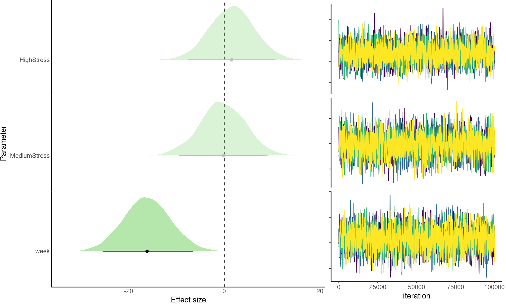
physio-baseline.CORT by treatment + week + (1|ID) + (1|round)
| priors | formula | iterations | chains | thinning | warmup | diverg_transitions | rhats > 1.05 | min_bulk_ESS | min_tail_ESS | seed | |
|---|---|---|---|---|---|---|---|---|---|---|---|
| 1 | b-normal(0, 5) Intercept-normal(0, 10) nu-gamma(2, 0.1) sd-student_t(3, 0, 10) sigma-student_t(3, 0, 10) | baseline.CORT ~ treatment + week + (1 | ID) + (1 | round) | 1e+05 | 4 | 1 | 50000 | 6255 (0.031%) | 0 | 8017.135 | 31502.5 | 662141751 |
| Estimate | l-95% CI | u-95% CI | Rhat | Bulk_ESS | Tail_ESS | |
|---|---|---|---|---|---|---|
| HighStress | 0.874 | 0.110 | 1.637 | 1.001 | 21696.113 | 35836.92 |
| MediumStress | 0.194 | -0.620 | 0.995 | 1 | 25210.214 | 44566.31 |
| week | -0.010 | -0.139 | 0.119 | 1.001 | 8017.135 | 31502.50 |
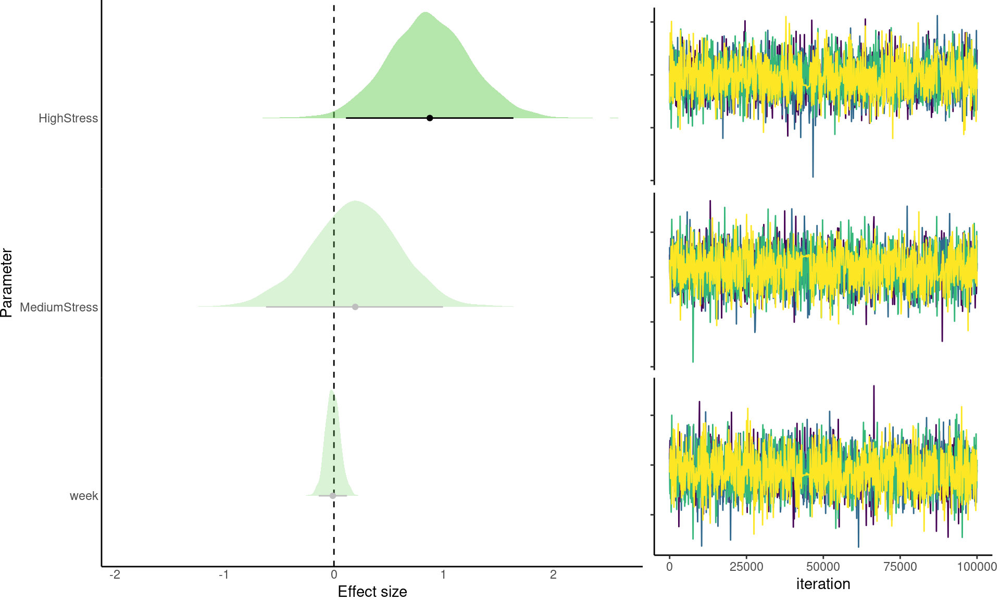
physio-breath.rate by treatment + week + (1|ID) + (1|round)
| priors | formula | iterations | chains | thinning | warmup | diverg_transitions | rhats > 1.05 | min_bulk_ESS | min_tail_ESS | seed | |
|---|---|---|---|---|---|---|---|---|---|---|---|
| 1 | b-normal(0, 5) Intercept-normal(0, 10) nu-gamma(2, 0.1) sd-student_t(3, 0, 10) sigma-student_t(3, 0, 10) | breath.rate ~ treatment + week + (1 | ID) + (1 | round) | 1e+05 | 4 | 1 | 50000 | 5808 (0.029%) | 0 | 4237.78 | 22921.74 | 1411987597 |
| Estimate | l-95% CI | u-95% CI | Rhat | Bulk_ESS | Tail_ESS | |
|---|---|---|---|---|---|---|
| HighStress | 0.228 | -0.167 | 0.620 | 1.001 | 6084.785 | 22921.74 |
| MediumStress | 0.115 | -0.310 | 0.544 | 1 | 15827.830 | 87358.76 |
| week | -0.768 | -0.909 | -0.625 | 1.001 | 4237.780 | 35802.47 |
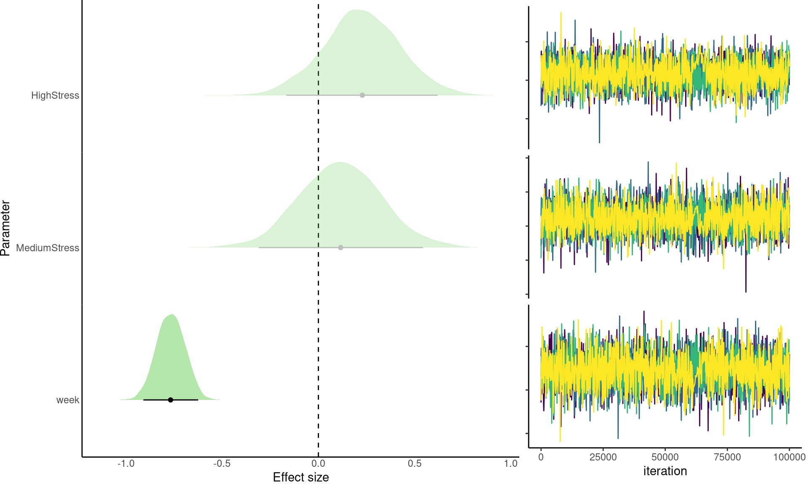
physio-stress.CORT by treatment + week + (1|ID) + (1|round)
| priors | formula | iterations | chains | thinning | warmup | diverg_transitions | rhats > 1.05 | min_bulk_ESS | min_tail_ESS | seed | |
|---|---|---|---|---|---|---|---|---|---|---|---|
| 1 | b-normal(0, 5) Intercept-normal(0, 10) nu-gamma(2, 0.1) sd-student_t(3, 0, 10) sigma-student_t(3, 0, 10) | stress.CORT ~ treatment + week + (1 | ID) + (1 | round) | 1e+05 | 4 | 1 | 50000 | 1796 (0.009%) | 0 | 22431.33 | 5699.755 | 1854922145 |
| Estimate | l-95% CI | u-95% CI | Rhat | Bulk_ESS | Tail_ESS | |
|---|---|---|---|---|---|---|
| HighStress | -0.259 | -1.044 | 0.529 | 1 | 22431.33 | 5699.755 |
| MediumStress | 0.037 | -0.852 | 0.918 | 1 | 37367.15 | 70541.436 |
| week | -0.065 | -0.170 | 0.039 | 1 | 44228.85 | 45826.122 |
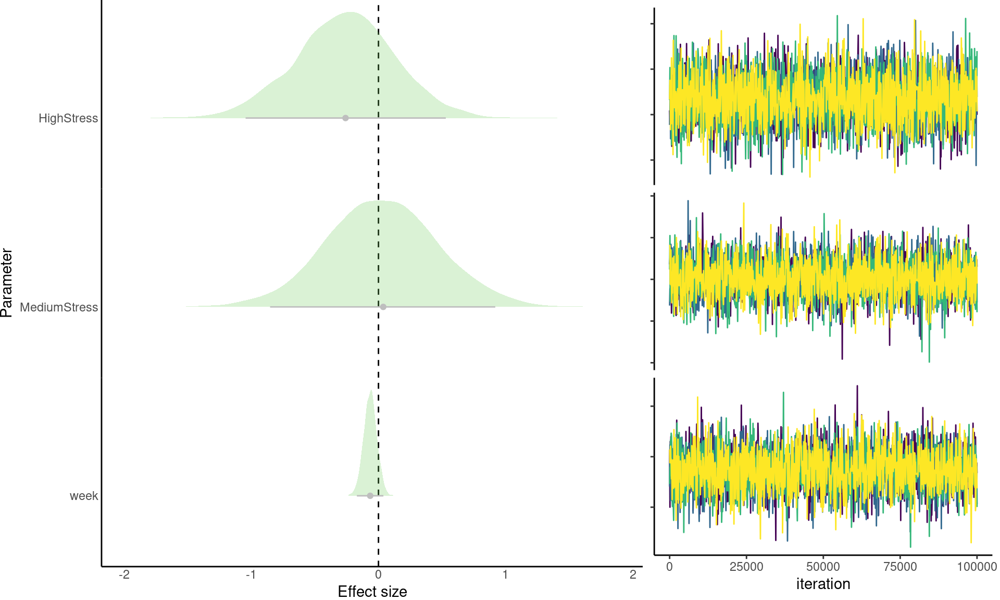
physio-stress.response by treatment + week + (1|ID) + (1|round)
| priors | formula | iterations | chains | thinning | warmup | diverg_transitions | rhats > 1.05 | min_bulk_ESS | min_tail_ESS | seed | |
|---|---|---|---|---|---|---|---|---|---|---|---|
| 1 | b-normal(0, 5) Intercept-normal(0, 10) nu-gamma(2, 0.1) sd-student_t(3, 0, 10) sigma-student_t(3, 0, 10) | stress.response ~ treatment + week + (1 | ID) + (1 | round) | 1e+05 | 4 | 1 | 50000 | 4766 (0.024%) | 0 | 4017.288 | 4369.013 | 1337746393 |
| Estimate | l-95% CI | u-95% CI | Rhat | Bulk_ESS | Tail_ESS | |
|---|---|---|---|---|---|---|
| HighStress | -0.244 | -1.037 | 0.553 | 1.001 | 8303.060 | 6123.450 |
| MediumStress | 0.048 | -0.840 | 0.917 | 1.002 | 4017.288 | 4369.013 |
| week | -0.064 | -0.168 | 0.038 | 1.001 | 4332.610 | 8721.908 |
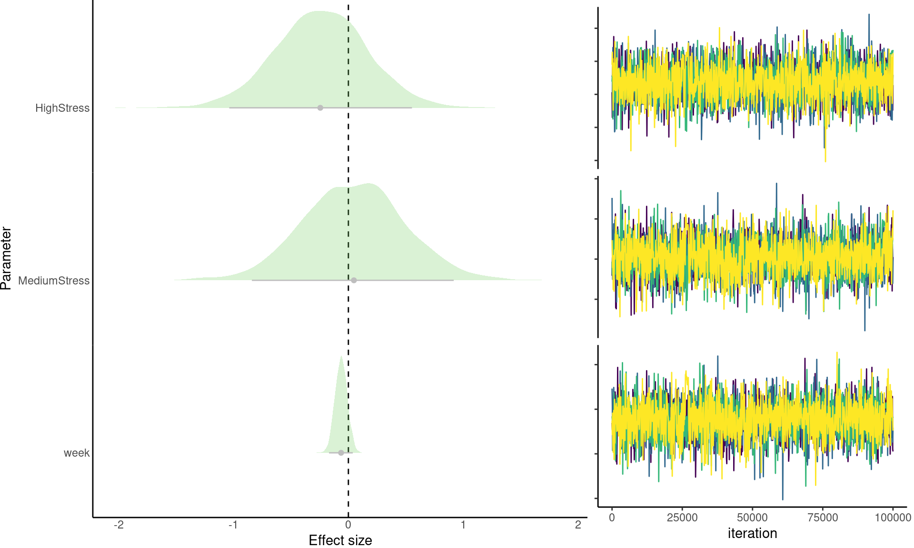
physio-weight by treatment + week + (1|ID) + (1|round)
| priors | formula | iterations | chains | thinning | warmup | diverg_transitions | rhats > 1.05 | min_bulk_ESS | min_tail_ESS | seed | |
|---|---|---|---|---|---|---|---|---|---|---|---|
| 1 | b-normal(0, 5) Intercept-normal(0, 10) nu-gamma(2, 0.1) sd-student_t(3, 0, 10) sigma-student_t(3, 0, 10) | weight ~ treatment + week + (1 | ID) + (1 | round) | 1e+05 | 4 | 1 | 50000 | 4876 (0.024%) | 0 | 1595.299 | 536.633 | 1479872948 |
| Estimate | l-95% CI | u-95% CI | Rhat | Bulk_ESS | Tail_ESS | |
|---|---|---|---|---|---|---|
| HighStress | -0.400 | -1.185 | 0.399 | 1.002 | 4731.667 | 36350.344 |
| MediumStress | -0.166 | -1.031 | 0.706 | 1.001 | 22880.693 | 69798.743 |
| week | -0.085 | -0.210 | 0.039 | 1.003 | 1595.299 | 536.633 |
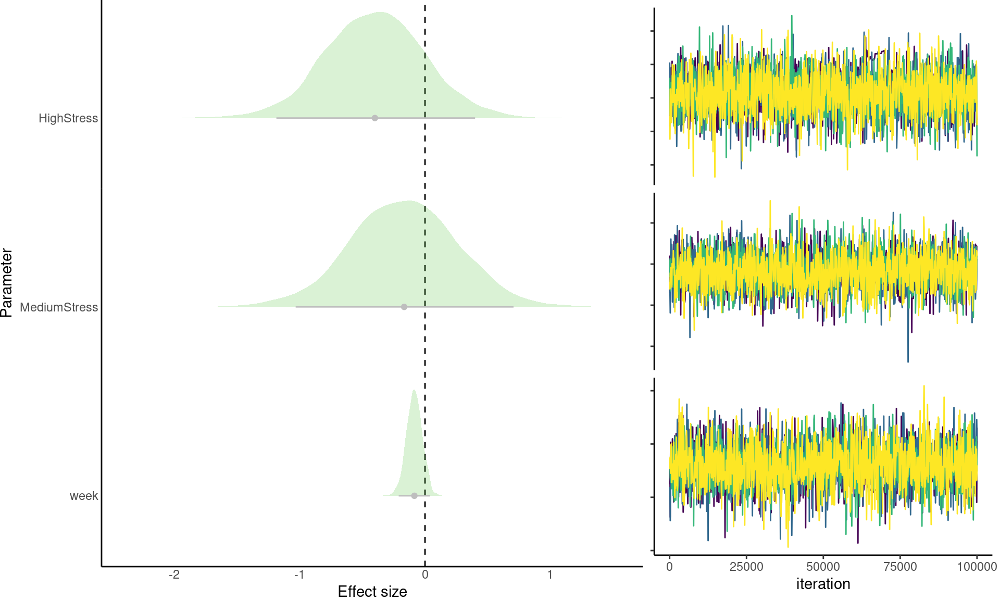
Barplot and effect sizes graphs
physio_model_list <- list.files(file.path(processed_data_path, "regressions"),
pattern = "physio-", full.names = TRUE)
# read all physio models
physio_models <- lapply(physio_model_list, readRDS)
names(physio_models) <- gsub(".rds", "", basename(physio_model_list))
breath.count <- stack(metadat[, c("D3.Breath.Count", "D7.Breath.Count",
"D14.Breath.Count", "D21.Breath.Count", "D28.Breath.Count")])
weight <- stack(metadat[, c("D3.Bird.Weight..g.", "D7.Bird.Weight..g.",
"D14.Bird.Weight..g.", "D21.Bird.Weight..g.", "D28.Bird.Weight..g.")])
cort.stress <- stack(metadat[, c("D3.CORT.Stress", "D7.CORT.Stress",
"D14.CORT.Stress", "D21.CORT.Stress", "D28.CORT.Stress")])
cort.baseline <- stack(metadat[, c("D3.CORT.Baseline", "D7.CORT.Baseline",
"D14.CORT.Baseline", "D21.CORT.Baseline", "D28.CORT.Baseline")])
stress <- data.frame(metadat[, c("Bird.ID", "Treatment", "Round",
"Treatment.Room")], week = breath.count$ind, breath.count = breath.count$values,
weight = weight$values, cort.stress = cort.stress$values, cort.baseline = cort.baseline$values,
stress.response = cort.stress$values - cort.baseline$values)
# head(stress)
stress$week <- factor(sapply(strsplit(as.character(stress$week), "\\."),
"[[", 1), levels = c("D3", "D7", "D14", "D21", "D28"))
stress$day <- as.numeric(gsub("D", "", as.character(stress$week)))
stress$round <- paste("Round", stress$Round)
stress$Treatment <- gsub("Medium", "Med.", stress$Treatment)
stress$treatment <- factor(stress$Treatment, levels = c("Control",
"Med. Stress", "High Stress"))
# remove 5th week
stress <- stress[stress$week != "D28", ]
stress_l <- lapply(stress$Bird.ID, function(x) {
X <- stress[stress$Bird.ID == x, ]
X$breath.count <- X$breath.count - X$breath.count[X$week == "D3"]
X$weight <- X$weight - X$weight[X$week == "D3"]
X$cort.stress <- X$cort.stress - X$cort.stress[X$week == "D3"]
X$cort.baseline <- X$cort.baseline - X$cort.baseline[X$week ==
"D3"]
X$stress.response <- X$stress.response - X$stress.response[X$week ==
"D3"]
return(X)
})
stress <- do.call(rbind, stress_l)
agg_stress <- aggregate(cbind(breath.count, weight, stress.response,
cort.baseline) ~ week + treatment, stress, mean)
agg_stress_se <- aggregate(cbind(breath.count, weight, stress.response,
cort.baseline) ~ week + treatment, stress, standard_error)
names(agg_stress_se) <- paste(names(agg_stress_se), ".se", sep = "")
agg_stress <- cbind(agg_stress, agg_stress_se[, 3:6])
agg_stress$Week <- 1:4
bs <- if (isTRUE(getOption("knitr.in.progress"))) 10 else 20
gg_breath.count <- ggplot(data = agg_stress, aes(x = Week, y = breath.count,
fill = treatment)) + geom_bar(stat = "identity") + geom_errorbar(aes(ymin = breath.count -
breath.count.se, ymax = breath.count + breath.count.se), width = 0.1) +
scale_fill_viridis_d(begin = 0.1, end = 0.9) + facet_wrap(~treatment,
ncol = 3, scale = "fixed") + labs(y = "Mean change in breath\nrate (breaths/min)",
x = "Week") + theme_classic(base_size = bs) + theme(legend.position = "none")
gg_weight <- ggplot(data = agg_stress, aes(x = Week, y = weight, fill = treatment)) +
geom_bar(stat = "identity") + geom_errorbar(aes(ymin = weight -
weight.se, ymax = weight + weight.se), width = 0.1) + scale_fill_viridis_d(begin = 0.1,
end = 0.9) + facet_wrap(~treatment, ncol = 3, scale = "fixed") +
labs(y = "Mean change in \nweight (grams)", x = "Week") + theme_classic(base_size = bs) +
theme(legend.position = "none")
gg_cort.baseline <- ggplot(data = agg_stress, aes(x = Week, y = cort.baseline,
fill = treatment)) + geom_bar(stat = "identity") + geom_errorbar(aes(ymin = cort.baseline -
cort.baseline.se, ymax = cort.baseline + cort.baseline.se), width = 0.1) +
scale_fill_viridis_d(begin = 0.1, end = 0.9) + facet_wrap(~treatment,
ncol = 3, scale = "fixed") + labs(y = "Mean change in\nbaseline CORT (ng/mL)",
x = "Week") + theme_classic(base_size = bs) + theme(legend.position = "none")
gg_stress.response <- ggplot(data = agg_stress, aes(x = Week, y = stress.response,
fill = treatment)) + geom_bar(stat = "identity") + geom_errorbar(aes(ymin = stress.response -
stress.response.se, ymax = stress.response + stress.response.se),
width = 0.1) + scale_fill_viridis_d(begin = 0.1, end = 0.9) +
facet_wrap(~treatment, ncol = 3, scale = "fixed") + labs(y = "Mean change in stress\nresponse CORT (ng/mL)",
x = "Week") + theme_classic(base_size = bs) + theme(legend.position = "none")
gg_coeffs_physio <- lapply(physio_models, function(x) {
vars <- grep("b_", posterior::variables(x), value = TRUE)
draws <- posterior::as_draws_array(x, variable = vars)
coef_table <- brmsish:::draw_summary(draws, variables = vars,
probs = c(0.025, 0.975), robust = TRUE, spread.type = "HPDI")
coef_table$predictor <- rownames(coef_table)
coef_table$predictor <- gsub("b_treatment|b_", "", coef_table$predictor)
coef_table$predictor <- gsub("Stress", " stress", coef_table$predictor)
coef_table$predictor <- gsub("week", "Week", coef_table$predictor)
coef_table <- coef_table[coef_table$predictor != "Intercept",
]
gg_coef <- ggplot2::ggplot(data = coef_table, aes(x = Estimate,
y = predictor)) + geom_vline(xintercept = 0, lty = 2) + ggplot2::geom_point(size = 3,
col = col_pointrange) + ggplot2::geom_errorbar(ggplot2::aes(xmin = `l-95% CI`,
xmax = `u-95% CI`), width = 0, col = col_pointrange) + ggplot2::theme_classic(base_size = bs) +
ggplot2::theme(axis.ticks.length = ggplot2::unit(0, "pt"),
plot.margin = ggplot2::margin(0, 0, 0, 0, "pt"), legend.position = "none",
strip.background = ggplot2::element_blank(), strip.text = ggplot2::element_blank()) +
ggplot2::labs(x = "Effect size", y = "")
return(gg_coef)
})
cowplot::plot_grid(gg_breath.count, gg_weight, gg_cort.baseline, gg_stress.response,
gg_coeffs_physio[[grep("breath", names(gg_coeffs_physio))]] +
theme_classic(base_size = bs), gg_coeffs_physio[[grep("weight",
names(gg_coeffs_physio))]] + theme_classic(base_size = bs),
gg_coeffs_physio[[grep("baseline", names(gg_coeffs_physio))]] +
theme_classic(base_size = bs), gg_coeffs_physio[[grep("response",
names(gg_coeffs_physio))]] + theme_classic(base_size = bs),
nrow = 2, rel_heights = c(1.8, 1))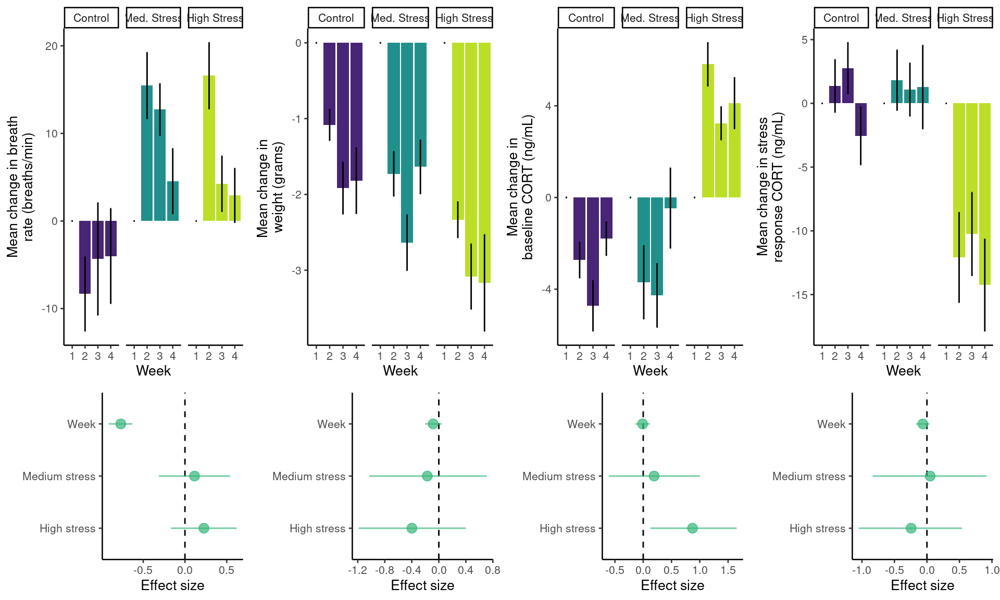
# try bs = 20 for saving plots
if (!isTRUE(getOption("knitr.in.progress"))) {
cowplot::ggsave2(filename = file.path(output_path, "bar_graphs_and_estimates_physiology_70dpi.jpeg"),
width = 23, height = 9, device = grDevices::png)
cowplot::ggsave2(filename = file.path(output_path, "bar_graphs_and_estimates_physiology_300dpi.jpeg"),
dpi = 300, width = 23, height = 9, device = grDevices::png)
}Takeaways
Breath rate decreases gradually across time after the first week
Stress response is higher in “high stress” birds compared to first week
Acoustic space projection
t-SNE
tsne_acou_space <- read.csv(file.path(processed_data_path, "tsne_acoustic_space.csv"))
ids <- c("371YYLM", "395WBHM")
mat <- matrix(c(11:14, 1:4, 5:8, 22, 9, 9, 18), ncol = 4, byrow = TRUE)
mat <- cbind(c(23, 10, 10, 20), mat, c(21, 15, 16, 19))
mat <- rbind(rep(17, 6), mat)
if (!isTRUE(getOption("knitr.in.progress"))) jpeg(file.path(output_path,
"acoustic_space_plot.jpg"), width = 1800, height = 2200, res = 300)
layout(mat, widths = c(0.4, 1, 1, 1, 1, 0.2), heights = c(4, 0.2,
1, 1, 0.4))
par(mar = c(0, 0, 0, 0))
panel_count <- 1
colors <- viridis(3, alpha = 0.8)
for (x in ids) for (i in 1:4) {
plot_space(X = tsne_acou_space, dimensions = c("TSNE1", "TSNE2"),
indices = which(tsne_acou_space$ID == x & tsne_acou_space$week ==
i), basecex = 2, pch = 20, labels = c(x, "group"), legend = NULL,
xaxt = if (panel_count %in% mat[4, ])
"s" else "n", yaxt = "n", colors = colors[1:2], point.cex = 1.7,
point.alpha = 0.3, point.colors = c("black", "black"))
# add y axis removing the upper tick label
if (panel_count %in% mat[, 2])
axis(2, at = seq(-60, 60, 20), labels = c(seq(-60, 40, 20),
""), tck = -0.02, lwd = 0.5, col = "black", col.axis = "black")
panel_count <- panel_count + 1
}
par(mar = c(0, 0, 0, 0))
plot(1, frame.plot = FALSE, type = "n", yaxt = "n", xaxt = "n")
text(x = 1, y = 0.75, "TSNE1", cex = 1.2)
par(mar = c(0, 0, 0, 0))
plot(1, frame.plot = FALSE, type = "n", yaxt = "n", xaxt = "n")
text(x = 0.8, y = 1, "TSNE2", srt = 90, cex = 1.2)
for (u in paste("Week", 1:4)) {
par(mar = c(0, 0, 0, 0))
plot(1, frame.plot = FALSE, type = "n", yaxt = "n", xaxt = "n")
if (u == "Week 1") {
mtext("b", side = 2, line = 2.2, at = 1, las = 1, cex = 1.5)
}
rect(0, 0, 2, 2, col = colors[2], border = NA)
box()
text(x = 1, y = 1, u, cex = 1.2)
}
for (u in ids) {
par(mar = c(0, 0, 0, 0))
plot(1, frame.plot = FALSE, type = "n", yaxt = "n", xaxt = "n")
rect(0, 0, 2, 2, col = colors[2], border = NA)
box()
text(x = 1, y = 1, u, srt = 270, cex = 1.2)
}
# set par to default
par(mar = c(2, 4, 1, 2) + 0.1)
# make scatter plot like gg_acou_space using base R plotting
# functions
plot(tsne_acou_space$TSNE1, tsne_acou_space$TSNE2, col = "white",
pch = 20, cex = 1.2, xlab = "", ylab = "TSNE2", cex.lab = 1.2)
# add legend with no margin color
legend(x = -75, y = -25, legend = c("Control", "Medium Stress", "High Stress"),
col = viridis::viridis(3, alpha = 0.3, direction = 1), pch = 20,
box.lwd = 0, pt.cex = 1.8, cex = 1.2)
points(tsne_acou_space$TSNE1, tsne_acou_space$TSNE2, col = viridis::viridis(3,
alpha = 0.3, direction = 1)[as.numeric(as.factor(tsne_acou_space$treatment))],
pch = 20, cex = 1.2)
mtext("a", side = 2, line = 2.7, at = 65, las = 1, cex = 1.5)
if (!isTRUE(getOption("knitr.in.progress"))) dev.off()
Overlap between treatments
ss <- space_similarity(treatment ~ TSNE1 + TSNE2, data = tsne_acou_space,
method = "density.overlap")
print_kable(ss)| group.1 | group.2 | overlap.1in2 | overlap.2in1 | mean.overlap | |
|---|---|---|---|---|---|
| 1 | Control | High Stress | 1.0000 | 0.8080 | 0.9040 |
| 2 | Control | Medium Stress | 1.0000 | 0.8456 | 0.9228 |
| 3 | High Stress | Medium Stress | 0.9354 | 1.0000 | 0.9677 |
Mean overlap: 0.9314969
Range of overlap: 0.9039941 to 0.9677128
Stats
Model: Predicted behavior ~ treatment + week (continuous) + IndRandom
Variables: # calls, Distance moved from self in first week, Overlap to original acoustic space, Match to group repertoire, Maybe overall size of acoustic space
Do as comparison to week one using rarefacted calls and kernel density
responses <- c("call.count",
"acoustic.diversity",
"acustic.plasticity",
"acoustic.convergence")
predictors <- c("~ treatment + week + (1|ID) + (1|round)")
formulas <- expand.grid(
responses = responses,
predictors = predictors,
stringsAsFactors = FALSE
)
# vars_to_scale <- c(responses, "week")
# for (i in vars_to_scale) agg_dat[, vars_to_scale] <- scale(agg_dat[, vars_to_scale])
behav_models <- lapply(1:nrow(formulas), function(x) {
sub_dat <- agg_dat[!is.na(agg_dat[names(agg_dat) == formulas$responses[x]]), ]
# remove week 1
if (!grepl("count|group", formulas$responses[x]))
sub_dat <- sub_dat[sub_dat$week != 1, ]
mod_name <- paste(formulas$responses[x],
gsub("~", "by", formulas$predictors[x]))
mod <- brm(
formula = paste(formulas$responses[x], formulas$predictors[x]),
iter = 100000,
family = if (formulas$responses[x] == "call.count")
negbinomial() else
Beta(link = "logit"),
silent = 2,
data = sub_dat,
control = list(adapt_delta = 0.9, max_treedepth = 15),
chains = 4,
cores = 4,
file = paste0(processed_data_path, "regressions/behav-", mod_name),
file_refit = "always",
prior = c(prior(normal(0, 5), "b"), prior(normal(0, 10), "Intercept") #,
# prior(student_t(3, 0, 10), "sd"),
# prior(student_t(3, 0, 10), "sigma"))
)
return(NULL)
})behav-acoustic.convergence by treatment + week + (1|ID) + (1|round)
| priors | formula | iterations | chains | thinning | warmup | diverg_transitions | rhats > 1.05 | min_bulk_ESS | min_tail_ESS | seed | |
|---|---|---|---|---|---|---|---|---|---|---|---|
| 1 | b-normal(0, 5) Intercept-normal(0, 10) phi-gamma(0.01, 0.01) sd-student_t(3, 0, 2.5) | acoustic.convergence ~ treatment + week + (1 | ID) + (1 | round) | 1e+05 | 4 | 1 | 50000 | 2682 (0.013%) | 0 | 11010.11 | 24870.45 | 1543370143 |
| Estimate | l-95% CI | u-95% CI | Rhat | Bulk_ESS | Tail_ESS | |
|---|---|---|---|---|---|---|
| HighStress | 0.284 | -0.380 | 0.970 | 1.001 | 11010.11 | 24870.45 |
| MediumStress | 0.328 | -0.334 | 1.016 | 1.001 | 22753.15 | 53261.45 |
| week | -0.316 | -0.564 | -0.063 | 1 | 24236.72 | 33083.95 |
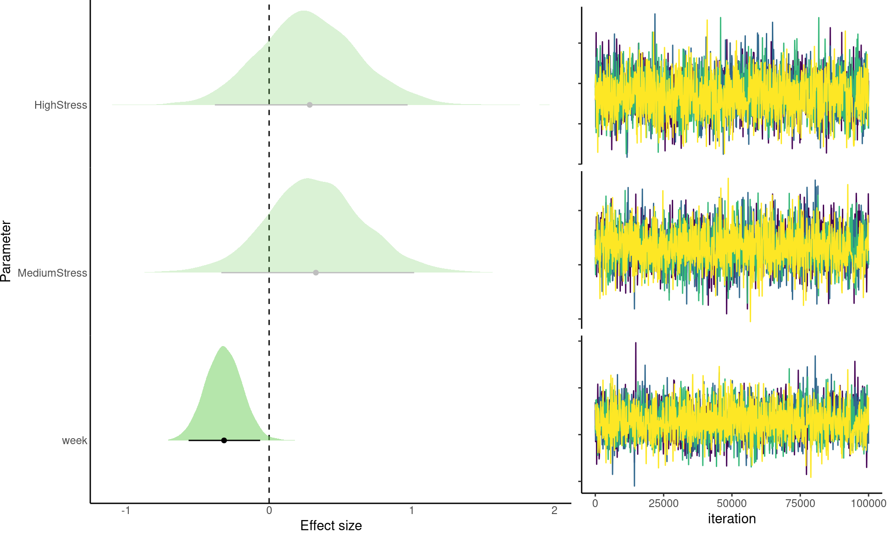
behav-acoustic.diversity by treatment + week + (1|ID) + (1|round)
| priors | formula | iterations | chains | thinning | warmup | diverg_transitions | rhats > 1.05 | min_bulk_ESS | min_tail_ESS | seed | |
|---|---|---|---|---|---|---|---|---|---|---|---|
| 1 | b-normal(0, 5) Intercept-normal(0, 10) phi-gamma(0.01, 0.01) sd-student_t(3, 0, 2.5) | acoustic.diversity ~ treatment + week + (1 | ID) + (1 | round) | 1e+05 | 4 | 1 | 50000 | 6528 (0.033%) | 0 | 20296.19 | 34793.85 | 195705932 |
| Estimate | l-95% CI | u-95% CI | Rhat | Bulk_ESS | Tail_ESS | |
|---|---|---|---|---|---|---|
| HighStress | -0.132 | -0.730 | 0.461 | 1 | 20296.19 | 35122.53 |
| MediumStress | -0.558 | -1.160 | 0.049 | 1 | 22357.72 | 45182.51 |
| week | 0.043 | -0.107 | 0.188 | 1 | 35567.91 | 34793.85 |
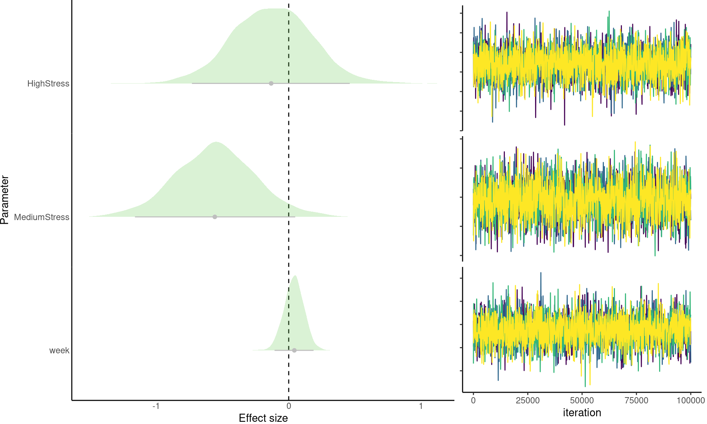
behav-acustic.plasticity by treatment + week + (1|ID) + (1|round)
| priors | formula | iterations | chains | thinning | warmup | diverg_transitions | rhats > 1.05 | min_bulk_ESS | min_tail_ESS | seed | |
|---|---|---|---|---|---|---|---|---|---|---|---|
| 1 | b-normal(0, 5) Intercept-normal(0, 10) phi-gamma(0.01, 0.01) sd-student_t(3, 0, 2.5) | acustic.plasticity ~ treatment + week + (1 | ID) + (1 | round) | 1e+05 | 4 | 1 | 50000 | 4613 (0.023%) | 0 | 9587.206 | 25616.83 | 443607903 |
| Estimate | l-95% CI | u-95% CI | Rhat | Bulk_ESS | Tail_ESS | |
|---|---|---|---|---|---|---|
| HighStress | -1.068 | -2.065 | -0.065 | 1.001 | 9587.206 | 31322.73 |
| MediumStress | -0.245 | -1.315 | 0.840 | 1 | 24675.909 | 56131.47 |
| week | 0.202 | 0.045 | 0.361 | 1 | 18446.592 | 25616.83 |
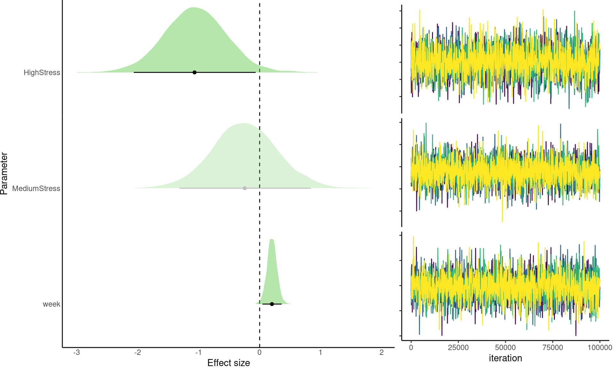
behav-call.count by treatment + week + (1|ID) + (1|round)
| priors | formula | iterations | chains | thinning | warmup | diverg_transitions | rhats > 1.05 | min_bulk_ESS | min_tail_ESS | seed | |
|---|---|---|---|---|---|---|---|---|---|---|---|
| 1 | b-normal(0, 5) Intercept-normal(0, 10) sd-student_t(3, 0, 2.5) shape-inv_gamma(0.4, 0.3) | call.count ~ treatment + week + (1 | ID) + (1 | round) | 1e+05 | 4 | 1 | 50000 | 3227 (0.016%) | 0 | 4923.233 | 1834.92 | 498436169 |
| Estimate | l-95% CI | u-95% CI | Rhat | Bulk_ESS | Tail_ESS | |
|---|---|---|---|---|---|---|
| HighStress | 1.341 | 0.325 | 2.351 | 1 | 31246.848 | 8083.761 |
| MediumStress | 0.872 | -0.144 | 1.893 | 1 | 55318.238 | 75546.858 |
| week | -0.220 | -0.440 | -0.004 | 1.002 | 4923.233 | 1834.920 |
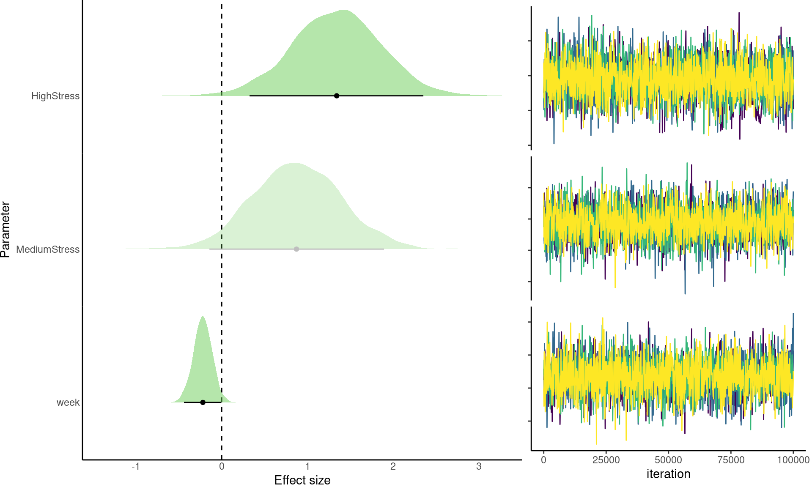
Barplot and effect sizes graph
behav_model_list <- list.files(file.path(processed_data_path, "regressions"),
pattern = "behav-", full.names = TRUE)
# read all physio models
behav_models <- lapply(behav_model_list, readRDS)
names(behav_models) <- gsub(".rds", "", basename(behav_model_list))
agg_call.count <- aggregate(cbind(call.count, acoustic.convergence) ~
week + treatment, agg_dat, mean)
agg_behav <- aggregate(cbind(acoustic.diversity, acustic.plasticity) ~
week + treatment, agg_dat, mean)
agg_call.count_se <- aggregate(cbind(call.count, acoustic.convergence) ~
week + treatment, agg_dat, standard_error)
agg_behav_se <- aggregate(cbind(acoustic.diversity, acustic.plasticity) ~
week + treatment, agg_dat, standard_error)
agg_behav_se <- merge(agg_call.count_se, agg_behav_se, all = TRUE)
names(agg_behav_se) <- paste(names(agg_behav_se), ".se", sep = "")
agg_behav <- merge(agg_call.count, agg_behav, all = TRUE)
agg_behav <- cbind(agg_behav, agg_behav_se[, 3:6])
bs <- if (isTRUE(getOption("knitr.in.progress"))) 10 else 20
agg_behav$treatment <- gsub("Medium", "Med.", agg_behav$treatment)
agg_behav$treatment <- factor(agg_behav$treatment, levels = c("Control",
"Med. Stress", "High Stress"))
gg_call.count <- ggplot(data = agg_behav, aes(x = week, y = call.count,
fill = treatment)) + geom_bar(stat = "identity") + geom_errorbar(aes(ymin = call.count -
call.count.se, ymax = call.count + call.count.se), width = 0.1) +
scale_fill_viridis_d(begin = 0.1, end = 0.9) + facet_wrap(~treatment,
ncol = 3, scale = "fixed") + labs(y = "Vocal output", x = "Week") +
theme_classic(base_size = bs) + theme(legend.position = "none")
gg_acoustic.diversity <- ggplot(data = agg_behav, aes(x = week, y = acoustic.diversity,
fill = treatment)) + geom_bar(stat = "identity") + geom_errorbar(aes(ymin = acoustic.diversity -
acoustic.diversity.se, ymax = acoustic.diversity + acoustic.diversity.se),
width = 0.1) + scale_fill_viridis_d(begin = 0.1, end = 0.9) +
facet_wrap(~treatment, ncol = 3, scale = "fixed") + labs(y = "Change in vocal diversity",
x = "Week") + theme_classic(base_size = bs) + theme(legend.position = "none")
gg_acustic.plasticity <- ggplot(data = agg_behav, aes(x = week, y = acustic.plasticity,
fill = treatment)) + geom_bar(stat = "identity") + geom_errorbar(aes(ymin = acustic.plasticity -
acustic.plasticity.se, ymax = acustic.plasticity + acustic.plasticity.se),
width = 0.1) + scale_fill_viridis_d(begin = 0.1, end = 0.9) +
facet_wrap(~treatment, ncol = 3, scale = "fixed") + labs(y = "Vocal plasticity",
x = "Week") + theme_classic(base_size = bs) + theme(legend.position = "none")
gg_acoustic.convergence <- ggplot(data = agg_behav, aes(x = week,
y = acoustic.convergence, fill = treatment)) + geom_bar(stat = "identity") +
geom_errorbar(aes(ymin = acoustic.convergence - acoustic.convergence.se,
ymax = acoustic.convergence + acoustic.convergence.se), width = 0.1) +
scale_fill_viridis_d(begin = 0.1, end = 0.9) + facet_wrap(~treatment,
ncol = 3, scale = "fixed") + labs(y = "Vocal convergence", x = "Week") +
theme_classic(base_size = bs) + theme(legend.position = "none")
gg_coeffs_behav <- lapply(behav_models, function(x) {
vars <- grep("b_", posterior::variables(x), value = TRUE)
draws <- posterior::as_draws_array(x, variable = vars)
coef_table <- brmsish:::draw_summary(draws, variables = vars,
probs = c(0.025, 0.975), robust = TRUE, spread.type = "HPDI")
coef_table$predictor <- rownames(coef_table)
coef_table$predictor <- gsub("b_treatment|b_", "", coef_table$predictor)
coef_table$predictor <- gsub("Stress", " stress", coef_table$predictor)
coef_table$predictor <- gsub("week", "Week", coef_table$predictor)
coef_table <- coef_table[coef_table$predictor != "Intercept",
]
gg_coef <- ggplot2::ggplot(data = coef_table, aes(x = Estimate,
y = predictor)) + geom_vline(xintercept = 0, lty = 2) + ggplot2::geom_point(size = 4,
col = col_pointrange) + ggplot2::geom_errorbar(ggplot2::aes(xmin = `l-95% CI`,
xmax = `u-95% CI`), width = 0, col = col_pointrange) + ggplot2::theme_classic(base_size = bs) +
ggplot2::theme(axis.ticks.length = ggplot2::unit(0, "pt"),
plot.margin = ggplot2::margin(0, 0, 0, 0, "pt"), legend.position = "none",
strip.background = ggplot2::element_blank(), strip.text = ggplot2::element_blank()) +
ggplot2::labs(x = "Effect size", y = "")
return(gg_coef)
})
cowplot::plot_grid(gg_call.count, gg_acoustic.diversity, gg_acustic.plasticity,
gg_acoustic.convergence, gg_coeffs_behav[[grep("count", names(gg_coeffs_behav))]] +
theme_classic(base_size = bs), gg_coeffs_behav[[grep("diversity",
names(gg_coeffs_behav))]] + theme_classic(base_size = bs),
gg_coeffs_behav[[grep("plasticity", names(gg_coeffs_behav))]] +
theme_classic(base_size = bs), gg_coeffs_behav[[grep("convergence",
names(gg_coeffs_behav))]] + theme_classic(base_size = bs),
nrow = 2, rel_heights = c(1.8, 1))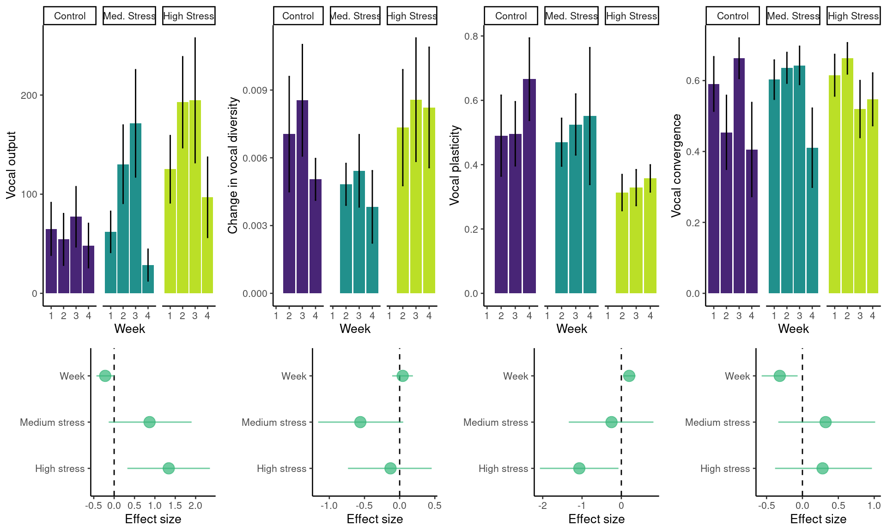
# try bs = 20 for saving plots
if (!isTRUE(getOption("knitr.in.progress"))) {
cowplot::ggsave2(filename = file.path(output_path, "bar_graphs_and_estimates_behavior_70dpi.jpeg"),
width = 23, height = 9, device = grDevices::png)
#
cowplot::ggsave2(filename = file.path(output_path, "bar_graphs_and_estimates_behavior_300dpi.jpeg"),
dpi = 300, width = 23, height = 9, device = grDevices::png)
}Takeaways
Lower vocal output over time
Higher vocal output in “high stress” birds compared to control
Lower acoustic plasticity to themselves in week 1 for “high stress” birds compared to control
Increase in acoustic plasticity over time
FOXP2
FoxP2 positive cells in MMST:VSP
Stats
foxp2_mod <- brm(formula = FoxP2.Counts.MMSt.Striatum ~ Treatment,
iter = 1e+05, family = Gamma(link = "log"), silent = 2, data = foxp2,
control = list(adapt_delta = 0.9, max_treedepth = 15), chains = 4,
cores = 4, file = file.path(processed_data_path, "regressions/foxp2_by_treatment_model"),
file_refit = "on_change", prior = c(prior(normal(0, 5), "b"),
prior(normal(0, 10), "Intercept")))foxp2_by_treatment_model
| priors | formula | iterations | chains | thinning | warmup | diverg_transitions | rhats > 1.05 | min_bulk_ESS | min_tail_ESS | seed | |
|---|---|---|---|---|---|---|---|---|---|---|---|
| 1 | b-normal(0, 5) Intercept-normal(0, 10) shape-gamma(0.01, 0.01) | FoxP2.Counts.MMSt.Striatum ~ Treatment | 1e+05 | 4 | 1 | 50000 | 0 (0%) | 0 | 145217.7 | 129358 | 411186403 |
| Estimate | l-95% CI | u-95% CI | Rhat | Bulk_ESS | Tail_ESS | |
|---|---|---|---|---|---|---|
| TreatmentMediumstress | -0.013 | -0.284 | 0.257 | 1 | 150039.8 | 129358.0 |
| TreatmentHighstress | 0.071 | -0.198 | 0.342 | 1 | 145217.7 | 132119.9 |
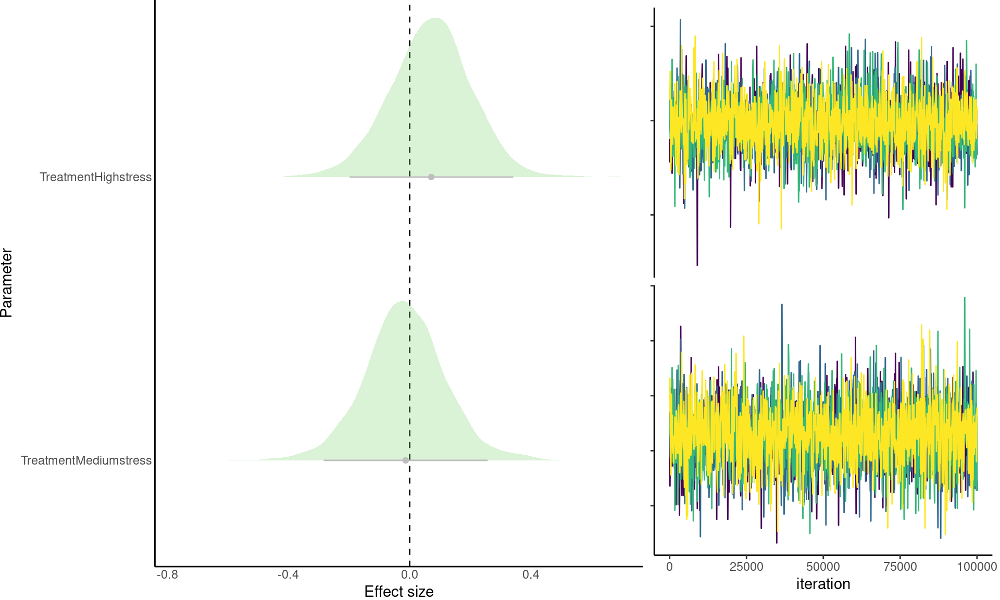
FoxP2 mRNA expression MMST:VSP
Stats
mod <- brm(formula = FoxP2.mRNA.MMST.VSP ~ Treatment, iter = 1e+05,
family = Gamma(link = "log"), silent = 2, data = qpcr, control = list(adapt_delta = 0.9,
max_treedepth = 15), chains = 4, cores = 4, file = file.path(processed_data_path,
"regressions/qpcr_by_treatment_model"), file_refit = "on_change",
prior = c(prior(normal(0, 5), "b"), prior(normal(0, 10), "Intercept")))qpcr_by_treatment_model
| priors | formula | iterations | chains | thinning | warmup | diverg_transitions | rhats > 1.05 | min_bulk_ESS | min_tail_ESS | seed | |
|---|---|---|---|---|---|---|---|---|---|---|---|
| 1 | b-normal(0, 5) Intercept-normal(0, 10) shape-gamma(0.01, 0.01) | FoxP2.mRNA.MMST.VSP ~ Treatment | 1e+05 | 4 | 1 | 50000 | 0 (0%) | 0 | 96059.45 | 95166.01 | 1953559397 |
| Estimate | l-95% CI | u-95% CI | Rhat | Bulk_ESS | Tail_ESS | |
|---|---|---|---|---|---|---|
| TreatmentHighStress | 0.438 | -0.303 | 1.158 | 1 | 96059.45 | 95522.95 |
| TreatmentMedium | -0.171 | -0.890 | 0.508 | 1 | 98207.68 | 95166.01 |
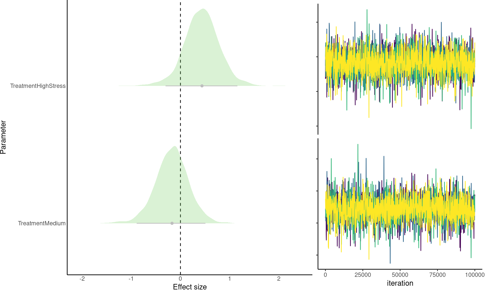
Barplot and effect sizes graph
agg_foxp2 <- aggregate(FoxP2.Counts.MMSt.Striatum ~ Treatment, foxp2,
mean)
agg_foxp2$se <- aggregate(FoxP2.Counts.MMSt.Striatum ~ Treatment,
foxp2, standard_error)$FoxP2.Counts.MMSt.Striatum
gg_foxp2 <- ggplot(data = agg_foxp2, aes(x = Treatment, y = FoxP2.Counts.MMSt.Striatum,
fill = Treatment)) + geom_bar(stat = "identity") + geom_errorbar(aes(ymin = FoxP2.Counts.MMSt.Striatum -
se, ymax = FoxP2.Counts.MMSt.Striatum + se), width = 0.1) + scale_fill_viridis_d(begin = 0.1,
end = 0.9) + scale_x_discrete(labels = c(Control = "Control",
`Medium stress` = "Medium\nstress", `High stress` = "High\nstress")) +
scale_fill_viridis_d(begin = 0.1, end = 0.9) + labs(y = "FoxP2 positive\ncells in MMST:VSP",
x = "Treatment") + theme_classic(base_size = bs) + theme(legend.position = "none")
agg_mrna <- aggregate(FoxP2.mRNA.MMST.VSP ~ Treatment, qpcr, mean)
agg_mrna$se <- aggregate(FoxP2.mRNA.MMST.VSP ~ Treatment, qpcr, standard_error)$FoxP2.mRNA.MMST.VSP
# order levels
agg_foxp2$Treatment <- factor(agg_foxp2$Treatment, levels = c("Control",
"Medium stress", "High stress"))
agg_mrna$Treatment <- factor(agg_mrna$Treatment, levels = c("Control",
"Medium", "High Stress"))
gg_qpcr <- ggplot(data = agg_mrna, aes(x = Treatment, y = FoxP2.mRNA.MMST.VSP,
fill = Treatment)) + geom_bar(stat = "identity") + geom_errorbar(aes(ymin = FoxP2.mRNA.MMST.VSP -
se, ymax = FoxP2.mRNA.MMST.VSP + se), width = 0.1) + scale_x_discrete(labels = c(Control = "Control",
Medium = "Medium\nstress", `High Stress` = "High\nstress")) +
scale_fill_viridis_d(begin = 0.1, end = 0.9) + labs(y = "FoxP2 mRNA\nexpression MMST:VSP",
x = "Treatment") + theme_classic(base_size = bs) + theme(legend.position = "none")
foxp2_cells_mod <- readRDS(file.path(processed_data_path, "regressions/foxp2_by_treatment_model.rds"))
qpcr_mod <- readRDS(file.path(processed_data_path, "regressions/qpcr_by_treatment_model.rds"))
gg_coeffs_foxp2 <- lapply(list(foxp2_cells_mod, qpcr_mod), function(x) {
vars <- grep("b_", posterior::variables(x), value = TRUE)
draws <- posterior::as_draws_array(x, variable = vars)
coef_table <- brmsish:::draw_summary(draws, variables = vars,
probs = c(0.025, 0.975), robust = TRUE, spread.type = "HPDI")
coef_table$predictor <- rownames(coef_table)
coef_table$predictor <- gsub("b_treatment|b_", "", coef_table$predictor)
coef_table$predictor <- gsub("Stress", " stress", coef_table$predictor)
coef_table$predictor <- gsub("week", "Week", coef_table$predictor)
coef_table$predictor <- gsub("Treatment", "", coef_table$predictor)
coef_table$predictor <- gsub("Mediumstress|Medium", "Medium stress",
coef_table$predictor)
coef_table$predictor <- gsub("Highstress", "High stress", coef_table$predictor)
coef_table <- coef_table[coef_table$predictor != "Intercept",
]
gg_coef <- ggplot2::ggplot(data = coef_table, aes(x = Estimate,
y = predictor)) + geom_vline(xintercept = 0, lty = 2) + ggplot2::geom_point(size = 4,
col = col_pointrange) + ggplot2::geom_errorbar(ggplot2::aes(xmin = `l-95% CI`,
xmax = `u-95% CI`), width = 0, col = col_pointrange) + ggplot2::theme_classic(base_size = bs) +
ggplot2::theme(axis.ticks.length = ggplot2::unit(0, "pt"),
plot.margin = ggplot2::margin(0, 0, 0, 0, "pt"), legend.position = "none",
strip.background = ggplot2::element_blank(), strip.text = ggplot2::element_blank()) +
ggplot2::labs(x = "Effect size", y = "")
return(gg_coef)
})
cowplot::plot_grid(gg_foxp2, gg_qpcr, gg_coeffs_foxp2[[1]] + theme_classic(base_size = bs),
gg_coeffs_foxp2[[2]] + theme_classic(base_size = bs), nrow = 2,
rel_heights = c(1.8, 1))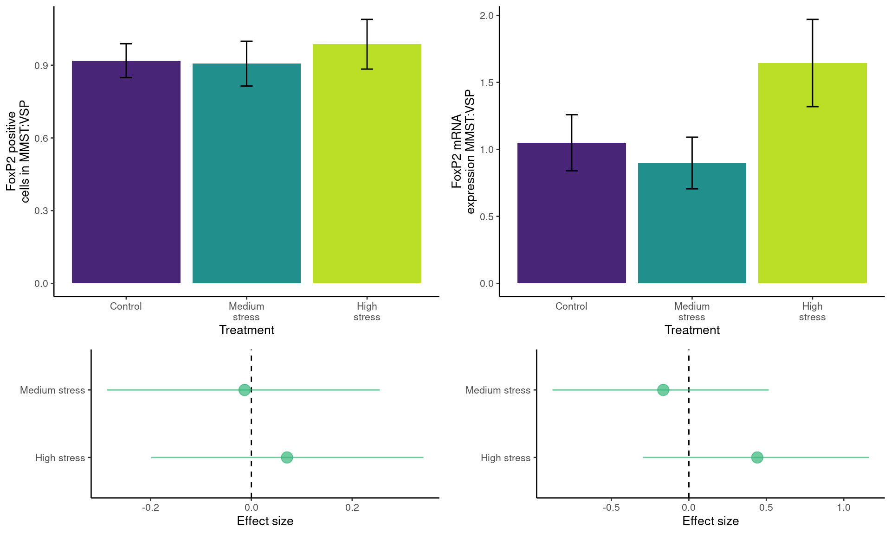
# try bs = 20 for saving plots
cowplot::ggsave2(filename = file.path(output_path, "bar_graphs_and_estimates_foxp2_70dpi.jpeg"),
width = 15, height = 10, device = grDevices::png)
cowplot::ggsave2(filename = file.path(output_path, "bar_graphs_and_estimates_foxp2_300dpi.jpeg"),
dpi = 300, width = 15, height = 10, device = grDevices::png)Combined model diagnostics
| priors | formula | iterations | chains | thinning | warmup | diverg_transitions | rhats > 1.05 | min_bulk_ESS | min_tail_ESS | seed | |
|---|---|---|---|---|---|---|---|---|---|---|---|
| 1 | b-normal(0, 5) Intercept-normal(0, 10) phi-gamma(0.01, 0.01) sd-student_t(3, 0, 2.5) | acoustic.convergence ~ treatment + week + (1 | ID) + (1 | round) | 1e+05 | 4 | 1 | 50000 | 2682 (0.01341%) | 0 | 1508.232 | 905.798 | 1543370143 |
| 2 | b-normal(0, 5) Intercept-normal(0, 10) phi-gamma(0.01, 0.01) sd-student_t(3, 0, 2.5) | acoustic.diversity ~ treatment + week + (1 | ID) + (1 | round) | 1e+05 | 4 | 1 | 50000 | 6528 (0.03264%) | 0 | 1418.797 | 644.218 | 195705932 |
| 3 | b-normal(0, 5) Intercept-normal(0, 10) phi-gamma(0.01, 0.01) sd-student_t(3, 0, 2.5) | acustic.plasticity ~ treatment + week + (1 | ID) + (1 | round) | 1e+05 | 4 | 1 | 50000 | 4613 (0.023065%) | 0 | 972.920 | 310.904 | 443607903 |
| 4 | b-normal(0, 5) Intercept-normal(0, 10) sd-student_t(3, 0, 2.5) shape-inv_gamma(0.4, 0.3) | call.count ~ treatment + week + (1 | ID) + (1 | round) | 1e+05 | 4 | 1 | 50000 | 3227 (0.016135%) | 0 | 1720.172 | 764.154 | 498436169 |
| 5 | b-normal(0, 5) Intercept-normal(0, 10) shape-gamma(0.01, 0.01) | FoxP2.Counts.MMSt.Striatum ~ Treatment | 1e+05 | 4 | 1 | 50000 | 0 (0%) | 0 | 77833.266 | 99166.624 | 411186403 |
| 6 | b-normal(0, 5) Intercept-normal(0, 10) nu-gamma(2, 0.1) sd-student_t(3, 0, 10) sigma-student_t(3, 0, 10) | breath.rate ~ treatment + week + (1 | ID) + (1 | round) | 1e+05 | 4 | 1 | 50000 | 0 (0%) | 0 | 67533.878 | 63482.352 | 1702562168 |
| 7 | b-normal(0, 5) Intercept-normal(0, 10) nu-gamma(2, 0.1) sd-student_t(3, 0, 10) sigma-student_t(3, 0, 10) | baseline.CORT ~ treatment + week + (1 | ID) + (1 | round) | 1e+05 | 4 | 1 | 50000 | 6255 (0.031275%) | 0 | 1287.589 | 419.033 | 662141751 |
| 8 | b-normal(0, 5) Intercept-normal(0, 10) nu-gamma(2, 0.1) sd-student_t(3, 0, 10) sigma-student_t(3, 0, 10) | breath.rate ~ treatment + week + (1 | ID) + (1 | round) | 1e+05 | 4 | 1 | 50000 | 5808 (0.02904%) | 0 | 554.678 | 155.517 | 1411987597 |
| 9 | b-normal(0, 5) Intercept-normal(0, 10) nu-gamma(2, 0.1) sd-student_t(3, 0, 10) sigma-student_t(3, 0, 10) | stress.CORT ~ treatment + week + (1 | ID) + (1 | round) | 1e+05 | 4 | 1 | 50000 | 1796 (0.00898%) | 0 | 6442.752 | 2527.654 | 1854922145 |
| 10 | b-normal(0, 5) Intercept-normal(0, 10) nu-gamma(2, 0.1) sd-student_t(3, 0, 10) sigma-student_t(3, 0, 10) | stress.response ~ treatment + week + (1 | ID) + (1 | round) | 1e+05 | 4 | 1 | 50000 | 4766 (0.02383%) | 0 | 732.763 | 108.817 | 1337746393 |
| 11 | b-normal(0, 5) Intercept-normal(0, 10) nu-gamma(2, 0.1) sd-student_t(3, 0, 10) sigma-student_t(3, 0, 10) | weight ~ treatment + week + (1 | ID) + (1 | round) | 1e+05 | 4 | 1 | 50000 | 4876 (0.02438%) | 0 | 707.720 | 223.429 | 1479872948 |
| 12 | b-normal(0, 5) Intercept-normal(0, 10) shape-gamma(0.01, 0.01) | FoxP2.mRNA.MMST.VSP ~ Treatment | 1e+05 | 4 | 1 | 50000 | 0 (0%) | 0 | 66356.591 | 82681.776 | 1953559397 |
Session information
─ Session info ───────────────────────────────────────────────────────────────
setting value
version R version 4.5.0 (2025-04-11)
os Ubuntu 22.04.5 LTS
system x86_64, linux-gnu
ui X11
language (EN)
collate en_US.UTF-8
ctype en_US.UTF-8
tz America/Costa_Rica
date 2025-07-21
pandoc 3.2 @ /usr/lib/rstudio/resources/app/bin/quarto/bin/tools/x86_64/ (via rmarkdown)
quarto 1.7.31 @ /usr/local/bin/quarto
─ Packages ───────────────────────────────────────────────────────────────────
package * version date (UTC) lib source
abind 1.4-8 2024-09-12 [1] CRAN (R 4.5.0)
ape 5.8-1 2024-12-16 [1] CRAN (R 4.5.0)
arrayhelpers 1.1-0 2020-02-04 [1] CRAN (R 4.5.0)
backports 1.5.0 2024-05-23 [1] CRAN (R 4.5.0)
bayesplot 1.12.0 2025-04-10 [1] CRAN (R 4.5.0)
boot 1.3-31 2024-08-28 [4] CRAN (R 4.4.2)
bridgesampling 1.1-2 2021-04-16 [1] CRAN (R 4.5.0)
brms * 2.22.0 2024-09-23 [1] CRAN (R 4.5.0)
brmsish * 1.0.0 2025-05-22 [1] Github (maRce10/brmsish@81ab826)
Brobdingnag 1.2-9 2022-10-19 [1] CRAN (R 4.5.0)
cachem 1.1.0 2024-05-16 [1] CRAN (R 4.5.0)
cellranger 1.1.0 2016-07-27 [3] CRAN (R 4.0.1)
checkmate 2.3.2 2024-07-29 [1] CRAN (R 4.5.0)
class 7.3-23 2025-01-01 [4] CRAN (R 4.4.2)
classInt 0.4-11 2025-01-08 [1] CRAN (R 4.5.0)
cli 3.6.5 2025-04-23 [1] CRAN (R 4.5.0)
cluster 2.1.8.1 2025-03-12 [4] CRAN (R 4.4.3)
coda 0.19-4.1 2024-01-31 [1] CRAN (R 4.5.0)
codetools 0.2-20 2024-03-31 [4] CRAN (R 4.5.0)
cowplot * 1.1.3 2024-01-22 [1] CRAN (R 4.5.0)
crayon 1.5.3 2024-06-20 [1] CRAN (R 4.5.0)
curl 6.4.0 2025-06-22 [1] CRAN (R 4.5.0)
DBI 1.2.3 2024-06-02 [1] CRAN (R 4.5.0)
deldir 2.0-4 2024-02-28 [1] CRAN (R 4.5.0)
devtools 2.4.5 2022-10-11 [1] CRAN (R 4.5.0)
digest 0.6.37 2024-08-19 [1] CRAN (R 4.5.0)
distributional 0.5.0 2024-09-17 [1] CRAN (R 4.5.0)
dplyr 1.1.4 2023-11-17 [1] CRAN (R 4.5.0)
e1071 1.7-16 2024-09-16 [1] CRAN (R 4.5.0)
ellipsis 0.3.2 2021-04-29 [3] CRAN (R 4.1.1)
emmeans 1.11.1 2025-05-04 [3] CRAN (R 4.5.0)
estimability 1.5.1 2024-05-12 [3] CRAN (R 4.5.0)
evaluate 1.0.3 2025-01-10 [1] CRAN (R 4.5.0)
farver 2.1.2 2024-05-13 [1] CRAN (R 4.5.0)
fastmap 1.2.0 2024-05-15 [1] CRAN (R 4.5.0)
formatR * 1.14 2023-01-17 [1] CRAN (R 4.5.0)
fs 1.6.6 2025-04-12 [1] CRAN (R 4.5.0)
generics 0.1.4 2025-05-09 [1] CRAN (R 4.5.0)
ggdist 3.3.3 2025-04-23 [1] CRAN (R 4.5.0)
ggplot2 * 3.5.2 2025-04-09 [1] CRAN (R 4.5.0)
glue 1.8.0 2024-09-30 [1] CRAN (R 4.5.0)
goftest 1.2-3 2021-10-07 [3] CRAN (R 4.1.1)
gridExtra 2.3 2017-09-09 [1] CRAN (R 4.5.0)
gtable 0.3.6 2024-10-25 [1] CRAN (R 4.5.0)
htmltools 0.5.8.1 2024-04-04 [1] CRAN (R 4.5.0)
htmlwidgets 1.6.4 2023-12-06 [1] RSPM (R 4.5.0)
httpuv 1.6.16 2025-04-16 [1] RSPM (R 4.5.0)
inline 0.3.21 2025-01-09 [1] CRAN (R 4.5.0)
jsonlite 2.0.0 2025-03-27 [1] CRAN (R 4.5.0)
kableExtra * 1.4.0 2024-01-24 [1] CRAN (R 4.5.0)
KernSmooth 2.23-26 2025-01-01 [4] CRAN (R 4.4.2)
knitr * 1.50 2025-03-16 [1] CRAN (R 4.5.0)
labeling 0.4.3 2023-08-29 [1] CRAN (R 4.5.0)
later 1.4.2 2025-04-08 [1] RSPM (R 4.5.0)
lattice 0.22-7 2025-04-02 [4] CRAN (R 4.5.0)
lifecycle 1.0.4 2023-11-07 [1] CRAN (R 4.5.0)
lme4 * 1.1-37 2025-03-26 [1] CRAN (R 4.5.0)
loo 2.8.0 2024-07-03 [1] CRAN (R 4.5.0)
lubridate 1.9.4 2024-12-08 [3] CRAN (R 4.5.0)
magrittr 2.0.3 2022-03-30 [1] CRAN (R 4.5.0)
MASS * 7.3-65 2025-02-28 [4] CRAN (R 4.4.3)
Matrix * 1.7-3 2025-03-11 [4] CRAN (R 4.4.3)
matrixStats 1.5.0 2025-01-07 [1] CRAN (R 4.5.0)
memoise 2.0.1 2021-11-26 [3] CRAN (R 4.1.2)
mgcv 1.9-3 2025-04-04 [4] CRAN (R 4.5.0)
mime 0.13 2025-03-17 [1] CRAN (R 4.5.0)
miniUI 0.1.2 2025-04-17 [3] CRAN (R 4.5.0)
minqa 1.2.4 2014-10-09 [3] CRAN (R 4.0.1)
multcomp 1.4-28 2025-01-29 [3] CRAN (R 4.5.0)
mvtnorm 1.3-3 2025-01-10 [1] CRAN (R 4.5.0)
nicheROVER 1.1.2 2023-10-13 [1] CRAN (R 4.5.0)
nlme 3.1-168 2025-03-31 [4] CRAN (R 4.4.3)
nloptr 2.2.1 2025-03-17 [3] CRAN (R 4.5.0)
packrat 0.9.2 2023-09-05 [1] CRAN (R 4.5.0)
pbapply * 1.7-4 2025-07-20 [1] CRAN (R 4.5.0)
permute 0.9-8 2025-06-25 [1] CRAN (R 4.5.0)
PhenotypeSpace * 0.1.1 2025-07-21 [1] Github (maRce10/PhenotypeSpace@1ee576c)
pillar 1.11.0 2025-07-04 [1] CRAN (R 4.5.0)
pkgbuild 1.4.8 2025-05-26 [1] CRAN (R 4.5.0)
pkgconfig 2.0.3 2019-09-22 [1] CRAN (R 4.5.0)
pkgload 1.4.0 2024-06-28 [1] CRAN (R 4.5.0)
plyr 1.8.9 2023-10-02 [1] CRAN (R 4.5.0)
polyclip 1.10-7 2024-07-23 [1] CRAN (R 4.5.0)
posterior 1.6.1 2025-02-27 [1] CRAN (R 4.5.0)
profvis 0.4.0 2024-09-20 [1] CRAN (R 4.5.0)
promises 1.3.3 2025-05-29 [1] RSPM (R 4.5.0)
proxy 0.4-27 2022-06-09 [1] CRAN (R 4.5.0)
purrr 1.0.4 2025-02-05 [1] CRAN (R 4.5.0)
QuickJSR 1.7.0 2025-03-31 [1] CRAN (R 4.5.0)
R6 2.6.1 2025-02-15 [1] CRAN (R 4.5.0)
raster 3.6-32 2025-03-28 [1] CRAN (R 4.5.0)
rbibutils 2.3 2024-10-04 [1] CRAN (R 4.5.0)
RColorBrewer 1.1-3 2022-04-03 [1] CRAN (R 4.5.0)
Rcpp * 1.1.0 2025-07-02 [1] CRAN (R 4.5.0)
RcppParallel 5.1.10 2025-01-24 [1] CRAN (R 4.5.0)
Rdpack 2.6.4 2025-04-09 [1] CRAN (R 4.5.0)
readxl * 1.4.5 2025-03-07 [3] CRAN (R 4.5.0)
reformulas 0.4.1 2025-04-30 [1] CRAN (R 4.5.0)
remotes * 2.5.0 2024-03-17 [1] CRAN (R 4.5.0)
reshape2 1.4.4 2020-04-09 [1] CRAN (R 4.5.0)
rlang 1.1.6 2025-04-11 [1] CRAN (R 4.5.0)
rmarkdown 2.29 2024-11-04 [1] CRAN (R 4.5.0)
rprojroot 2.0.4 2023-11-05 [3] CRAN (R 4.5.0)
rstan 2.32.7 2025-03-10 [1] CRAN (R 4.5.0)
rstantools 2.4.0 2024-01-31 [1] CRAN (R 4.5.0)
rstudioapi 0.17.1 2024-10-22 [1] CRAN (R 4.5.0)
sandwich 3.1-1 2024-09-15 [3] CRAN (R 4.5.0)
scales 1.4.0 2025-04-24 [1] CRAN (R 4.5.0)
sessioninfo 1.2.3 2025-02-05 [3] CRAN (R 4.5.0)
sf 1.0-21 2025-05-15 [1] CRAN (R 4.5.0)
shiny 1.10.0 2024-12-14 [1] CRAN (R 4.5.0)
sketchy 1.0.5 2025-04-22 [1] CRANs (R 4.5.0)
sp 2.2-0 2025-02-01 [1] CRAN (R 4.5.0)
spatstat.data 3.1-6 2025-03-17 [1] CRAN (R 4.5.0)
spatstat.explore 3.4-3 2025-05-21 [1] CRAN (R 4.5.0)
spatstat.geom 3.5-0 2025-07-20 [1] CRAN (R 4.5.0)
spatstat.random 3.4-1 2025-05-20 [1] CRAN (R 4.5.0)
spatstat.sparse 3.1-0 2024-06-21 [1] CRAN (R 4.5.0)
spatstat.univar 3.1-4 2025-07-13 [1] CRAN (R 4.5.0)
spatstat.utils 3.1-5 2025-07-17 [1] CRAN (R 4.5.0)
StanHeaders 2.32.10 2024-07-15 [1] CRAN (R 4.5.0)
stringi 1.8.7 2025-03-27 [1] CRAN (R 4.5.0)
stringr 1.5.1 2023-11-14 [1] CRAN (R 4.5.0)
survival 3.8-3 2024-12-17 [4] CRAN (R 4.4.2)
svglite 2.1.3 2023-12-08 [3] CRAN (R 4.5.0)
svUnit 1.0.6 2021-04-19 [1] CRAN (R 4.5.0)
systemfonts 1.2.3 2025-04-30 [3] CRAN (R 4.5.0)
tensor 1.5.1 2025-06-17 [1] CRAN (R 4.5.0)
tensorA 0.36.2.1 2023-12-13 [1] CRAN (R 4.5.0)
terra 1.8-60 2025-07-21 [1] CRAN (R 4.5.0)
TH.data 1.1-3 2025-01-17 [3] CRAN (R 4.5.0)
tibble 3.3.0 2025-06-08 [1] RSPM (R 4.5.0)
tidybayes 3.0.7 2024-09-15 [1] CRAN (R 4.5.0)
tidyr 1.3.1 2024-01-24 [1] CRAN (R 4.5.0)
tidyselect 1.2.1 2024-03-11 [1] CRAN (R 4.5.0)
timechange 0.3.0 2024-01-18 [3] CRAN (R 4.5.0)
units 0.8-7 2025-03-11 [1] CRAN (R 4.5.0)
urlchecker 1.0.1 2021-11-30 [1] CRAN (R 4.5.0)
usethis 3.1.0 2024-11-26 [3] CRAN (R 4.5.0)
V8 6.0.4 2025-06-04 [1] RSPM (R 4.5.0)
vctrs 0.6.5 2023-12-01 [1] CRAN (R 4.5.0)
vegan 2.7-1 2025-06-05 [1] CRAN (R 4.5.0)
viridis * 0.6.5 2024-01-29 [1] CRAN (R 4.5.0)
viridisLite * 0.4.2 2023-05-02 [1] CRAN (R 4.5.0)
withr 3.0.2 2024-10-28 [1] CRAN (R 4.5.0)
xaringanExtra 0.8.0 2024-05-19 [1] CRAN (R 4.5.0)
xfun 0.52 2025-04-02 [1] CRAN (R 4.5.0)
xml2 1.3.8 2025-03-14 [1] CRAN (R 4.5.0)
xtable 1.8-4 2019-04-21 [3] CRAN (R 4.0.1)
yaml 2.3.10 2024-07-26 [1] CRAN (R 4.5.0)
zoo 1.8-14 2025-04-10 [3] CRAN (R 4.5.0)
[1] /home/m/R/x86_64-pc-linux-gnu-library/4.5
[2] /usr/local/lib/R/site-library
[3] /usr/lib/R/site-library
[4] /usr/lib/R/library
* ── Packages attached to the search path.
──────────────────────────────────────────────────────────────────────────────